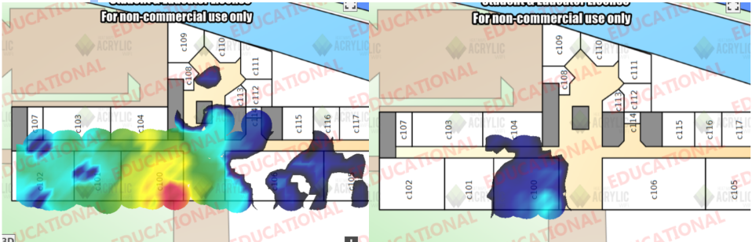
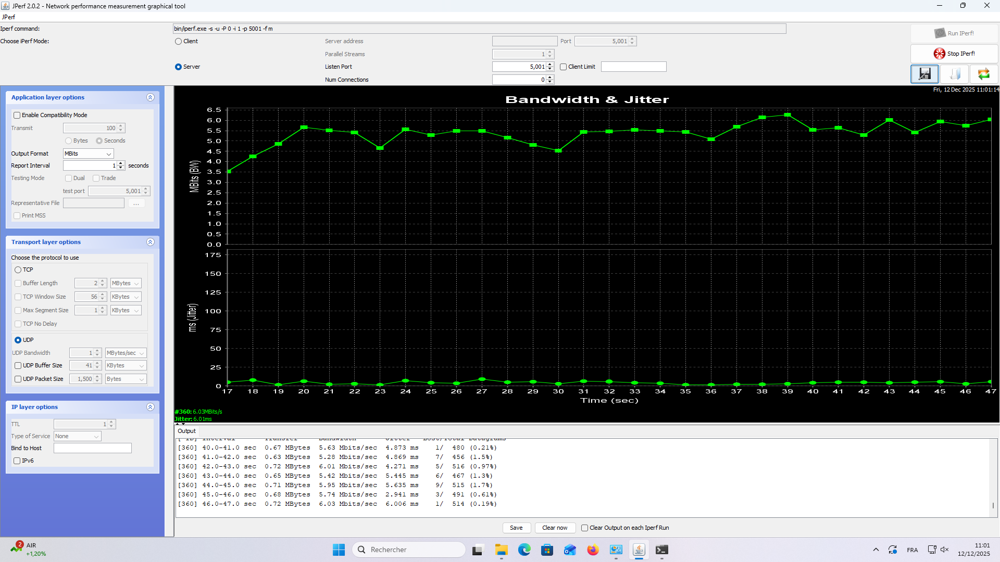
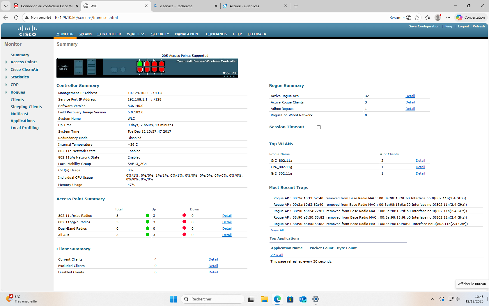
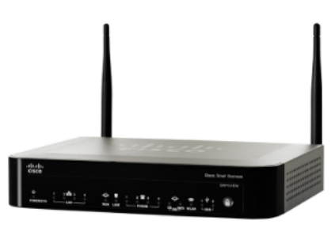
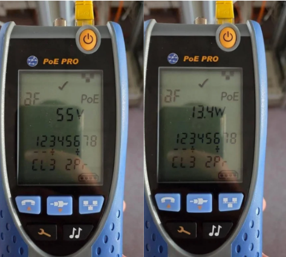
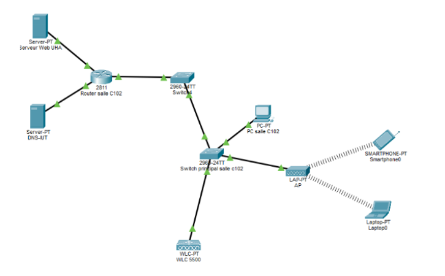

SAÉ 1.03 — BUT R&T IUT Colmar 2025–2026
Discovering a Transmission Device
Real Wi-Fi study · Cisco Catalyst 2960 PoE · Heatmaps · iPerf · Packet Tracer
Complete study of a real Wi-Fi infrastructure installed in building C of the IUT of Colmar. The project covered RJ45 Cat6 T568B cabling, PoE power supply (IEEE 802.3af) via Cisco Catalyst 2960, Wi-Fi coverage heatmaps (2.4/5 GHz), RSSI measurements at different distances, iPerf throughput, Cisco WLC controller analysis and a Packet Tracer simulation.
Project description
📡 Wi-Fi measurements
- Coverage heatmaps 2.4 GHz (802.11g) and 5 GHz (802.11a)
- RSSI measurements at 0, 10, 25, 50m from AP E
- Loss calculation (dB) by distance and obstacles
- Laptop vs smartphone performance comparison
- Evaluation : RSSI Coverage 97%, Overall Wi-Fi Quality 98%
🔌 Equipment studied
- Cisco Catalyst 2960 (WS-C2960-24PC-LV06) — 24 ports PoE, 370W
- AP Cisco AIR-AP1231G-E-K9 — compatible IEEE 802.3af, 12,95W max
- PoE PRO tester: 55V / 13.4W measured (Class 3)
- Cat6 S/FTP RJ45 cables, T568B standard
- Cisco WLC Controller (software version 8.0.140.0)
📊 Throughput & performance
- iPerf TCP tests between client and server
- Room C100 (near AP): 5.9 Mbit/s (5GHz), 4.8 Mbit/s (2.4GHz)
- Room C101: significant 5GHz degradation
- Room C102: 0.55 Mbit/s (5GHz) vs 2.3 Mbit/s (2.4GHz)
- Detection of Rogue APs by the controller
🖥️ Packet Tracer simulation
- Routeur + Cisco 2960 + WLC + LWAP + clients WiFi
- Addressing plan 10.129.10.0/24
- Internal WLC DHCP
- SSID GrX_802.11a (5GHz) et GrX_802.11b/g (2,4GHz)
- SSH connection to switch validated
Tech stack
What I learned
- Wi-Fi 802.11 operation: 2.4 GHz vs 5 GHz differences (range vs throughput)
- PoE power: IEEE 802.3af protocol, power classes, PoE budget
- RSSI signal measurement and dB loss analysis
- Using iPerf to measure real Wi-Fi throughput
- Wi-Fi network architecture with controller (WLC + LWAP)
- Complete network simulation in Cisco Packet Tracer
BUT R&T Skills Framework
Proof
Full report SAE_wifi_report.pdf — 15 pages of detailed analysis.
SAE_wifi.pptx presentation — available on request.





